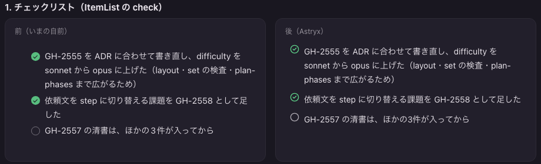
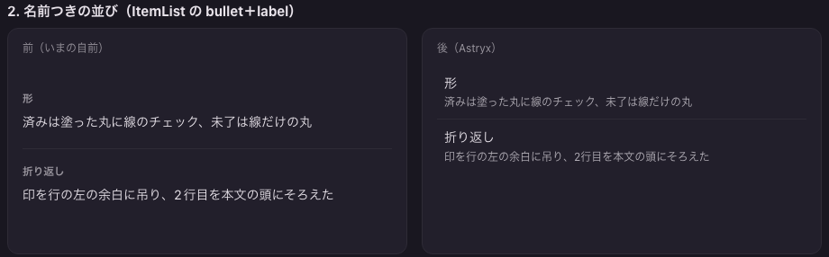
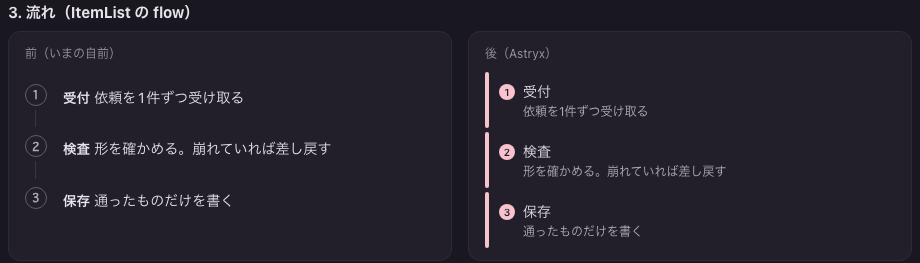
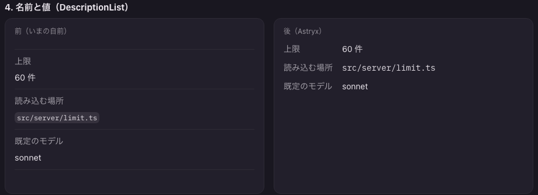
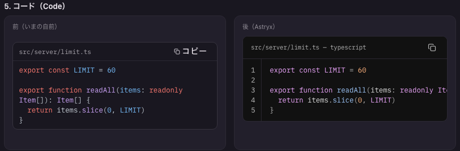
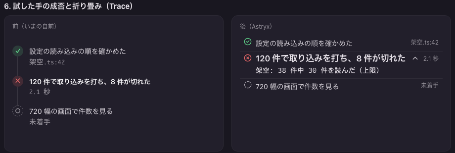
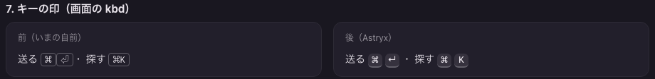

レポートの部品を Astryx に寄せる
構成の再提案と、寄せる前後の比較（2026-11-21）。前は今の自前の部品、後は同じ中身を Astryx 0.7.16 の部品で描いたもの。どちらも 1400×900 の見本帳で、同じ色のテーマの上で撮った。後は試作で、包みの調整はまだ入れていない。
今の形: 描き方が3通りある
| 描き方 | 中身 | Astryx との関係 |
|---|---|---|
components/ui/ | 31の部品（Button・Note・Table・Icon など） | Astryx を読める唯一の場所（dependency-cruiser が検査）。ADR 0053 で見た目は Astryx のまま。ただし disclosure・expand-button・first-note-list・round-button・typing-dot-list の5つは Astryx を読まない自前 |
features/report/leaf/ | レポートの内容部品の .tsx 40ファイル | ui/ を使うのは13個だけ。残りは自前の React と CSS |
| Markdown の経路 | react-markdown と REPORT_COMPONENTS（pre・ul・li・table など14要素の割り当て）、renderer/ の CSS 23ファイル | Astryx を通らない。チェックの印も rehypeTaskCheck が作る span に CSS で描いている |
同じ「並び」でも、ui/ の画面・内容部品・Markdown の箇条書きで余白と印と字の段が別々に決まっていて、これが統一感の欠けの元になっている。
提案する構成: ui/ を通る1本の道にする
層1 ui/（Astryx への唯一の入口のまま広げる）
List・MetadataList・Stepper・Collapsible・CodeBlock・Kbd・TabList・Slider・Switch・Citation の包みを足す。包みが決めるのは tsukumo 共通の約束だけ（ラベルは折り返す、本文の行の高さは
List・MetadataList・Stepper・Collapsible・CodeBlock・Kbd・TabList・Slider・Switch・Citation の包みを足す。包みが決めるのは tsukumo 共通の約束だけ（ラベルは折り返す、本文の行の高さは
--line-height-reading、状態の色は state-*）。見た目そのものは ADR 0053 のとおり Astryx のまま。自前の5つは Collapsible・IconButton などへ置き換える。↓ 層2 内容部品（leaf/）は ui/ だけで組む
ItemList の check・labeled・flow、DescriptionList、Code、Trace の折り畳みなどを ui/ の部品で描く。leaf/ の CSS に残すのは並べ方（grid・gap）だけにし、色・枠・角丸・字の段を宣言しないことを規約テストで検査する。
ItemList の check・labeled・flow、DescriptionList、Code、Trace の折り畳みなどを ui/ の部品で描く。leaf/ の CSS に残すのは並べ方（grid・gap）だけにし、色・枠・角丸・字の段を宣言しないことを規約テストで検査する。
↓ 層3 Markdown の経路も同じ部品へ写す
すでにある
すでにある
REPORT_COMPONENTS の割り当てを継ぎ目にして、ul・ol・li → List、pre → CodeBlock、kbd → Kbd、details → Collapsible を当てる。- [x] は rehypeTaskCheck が span ではなく印の情報を残し、li の割り当てが List の印として描く。表・脚注・地の文の中の字飾りは Astryx に対応が無いので CSS のまま残す。対象にしないもの
Graph・Chart・ChartGrid・Mermaid・Timeline・Plot・Matrix・Compare の図の本体は Astryx に部品が無いので今のまま。ただし図の枠・題・切り替えのボタンは層1の部品（Surface・ButtonGroup など）へ寄せる。
今の決定との関係
| ADR | 関係 |
|---|---|
| 0053（Astryx の見た目に寄せる） | 延長。0053 は ui/ の中を決めた。この提案は ui/ の外（内容部品と Markdown の経路）も ui/ を通すと決める |
| 0042（内容部品を React で直に描く） | 前提のまま。直に描く部品の中身を ui/ の部品にする |
| 0052（Astryx の採用と境界） | 境界の検査はそのまま。Astryx を読むのは ui/ だけ |
前後の比較（7種類）
1. チェックリストそのまま寄せられる

- 印は lucide の CircleCheck・Circle を Astryx の Icon で描く。今日直した CSS の丸が要らなくなる。
- Astryx の印は線の丸で、今の塗った丸より軽い。塗りを残したいなら包みで CircleCheck の塗りの版を選ぶ。
- ListItem は文字列のラベルを1行で切る。包みでラベルを要素に包んで折り返すと決める（試作の最初の撮影では「son…」で切れた）。
2. 名前つきの並びそのまま寄せられる

- 名前が太字の小見出しから、本文の大きさの見出しになり、説明が一段小さく控えめになる。
- 説明の行の高さが Astryx の既定のままで詰まる。包みで
--line-height-readingを当てる。
3. 流れ寄せられるが色を決める

- Stepper は済んだ段に差し色の縦棒と丸を付ける。流れは「進み具合」ではなく「手順の並び」なので、差し色ではなく ink-quiet の線に落とすか、status を付けない形にする。
- 番号の丸は今より小さい。
4. 名前と値そのまま寄せられる

- 名前と値が横に並び、3件の高さが撮った画でおよそ 206px から 84px になった。
- 値の中のコード（パス）は、今は地の付いた札、後は書体だけ。包みで地の付いたコードに合わせるかを決める。
- 狭い器では MetadataList が縦積みに戻るかを、実装のときに確かめる（試作では測っていない）。
5. コード寄せられるが折り返しを決める

- CodeBlock は折り返さず横にスクロールする。今は折り返す。読み物のレポートでは折り返しが要るので、包みで折り返すか、横スクロールを受け入れるかを決める。
- 行番号・言語名・コピーのボタンが付き、地が一段暗くなる。
- 色付けは CodeBlock 自身が持つ。今の rehype-highlight の配色と揃うかは実装のときに見る。
6. 試した手の成否と折り畳み印は寄せる・折り畳みは調整

- 成否の印は Icon（CircleCheck・CircleX・CircleDashed）で揃う。
- 今の縦の線（段のつながり）が消え、補足の数が右端に寄る。
- Collapsible の開く側の字が見出しの大きさになり、行の中で浮いている。包みで本文の段に揃える必要がある。
7. キーの印そのまま寄せられる

- 画面に散っている kbd（入力欄・やり取りの列の題・コマンドパレット）を1つにできる。
移行の段
| 段 | すること | 見た目が変わる場所 |
|---|---|---|
| 0. 設計 | この構成を ADR として書き、下の「決めてほしいこと」の答えを焼く | なし |
| 1. ui/ の包み | List・MetadataList・Stepper・Collapsible・CodeBlock・Kbd の包みを足し、見本帳に並べる。自前の5つを置き換える | 見本帳、disclosure を使う画面 |
| 2. 内容部品 | ItemList（check・labeled・flow）、DescriptionList、Code、Trace を ui/ で描き直す。leaf/ の CSS から見た目の宣言を消す | レポートの本文 |
| 3. Markdown の経路 | REPORT_COMPONENTS に List・CodeBlock・Kbd・Collapsible を割り当て、rehypeTaskCheck を印の情報だけに縮める | レポートの地の文の箇条書きとコード |
| 4. 画面の残り | kbd・やり取りの列の role=tab・引数の調整（parameter-knob）を Kbd・TabList・Slider・Switch へ | 入力欄、左の列、ParameterSlider |
| 5. 検査 | leaf/ と renderer/ の CSS が色・枠・角丸・字の段を宣言しないことを規約テストにする | なし |
段1〜4は1段ずつ main へ送れる。各段は見本帳と E2E の写しを撮り直す。
決めてほしいこと
| 論点 | 選べる形 | おすすめ |
|---|---|---|
| コードの長い行 | 折り返す ／ 横にスクロールする（Astryx の既定） | 折り返す。レポートは読み物で、横スクロールは見落とされる |
| 流れの色 | 差し色の縦棒（Stepper の既定） ／ ink-quiet の線 | ink-quiet の線。差し色はキャラクターの色で、手順の並びに使うと進み具合と紛れる |
| チェックの印 | 線の丸（Astryx の既定） ／ 塗った丸（今） | 線の丸。ほかの Icon と線の太さが揃う |